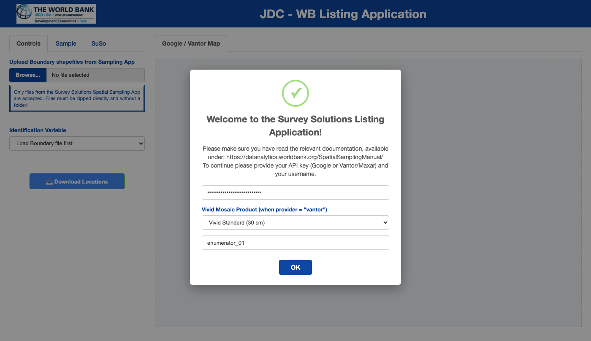
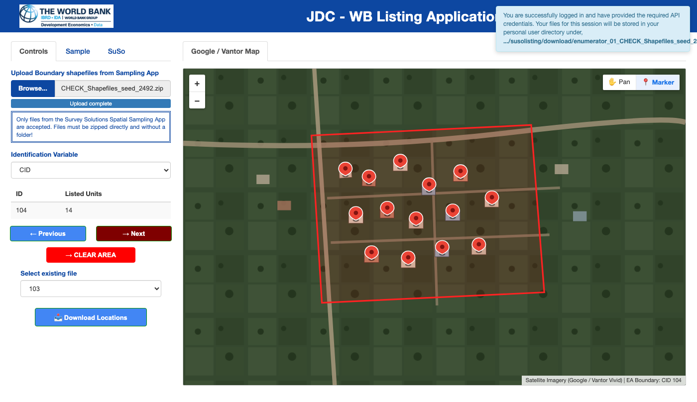

1. Enumerator Guide: Marking Buildings in Enumeration Areas
Source:vignettes/enumerator-workflow.Rmd
enumerator-workflow.RmdOverview
The Survey Solutions Listing Application
(susolisting) enables desk enumerators to build a complete
second-stage sampling frame of buildings within first-stage Enumeration
Areas (EAs). Starting from a zipped ESRI shapefile of EA boundary
polygons (typically produced by the JDC-Survey Solutions
Spatial Sampling Application), enumerators step through each polygon
on high-resolution satellite imagery and place a marker on every visible
building rooftop.
The application supports two satellite imagery providers:
-
Google Maps (
provider = "google", default): Usesgooglewayto render Google Satellite imagery. -
Vantor / Maxar Vivid Mosaic
(
provider = "vantor"or"maxar"): Usesleafletandvantorrto stream high-resolution (30 cm Standard or 15 cm Advanced) OGC WMTS/WMS satellite basemaps and optional seamline cutlines.
1. Starting the Application
To launch the application in individual (local) enumerator
mode, run runListingApp() without administrator
credentials:
library(susolisting)
# Option A: Use Google Maps satellite imagery (default)
runListingApp(provider = "google")
# Option B: Use Vantor / Maxar Vivid satellite imagery via leaflet + vantorr
runListingApp(provider = "vantor")Start-Up Authentication Dialog
When the browser opens, a modal dialog prompts you for your satellite API credentials and a User Name:

Start-up modal dialog prompting for API credentials (Google or Vantor/Maxar) and the enumerator’s User Name.
-
API Key / Credentials:
- When
provider = "google", enter your Google Maps JavaScript API key. - When
provider = "vantor", enter your Vantor / Maxar API Key (or leave blank ifVANTOR_API_KEYorMAXAR_API_KEYis already configured in your.Renviron), choose the Vivid Mosaic Product (VIVID_STANDARD_30at 30 cm orVIVID_ADVANCED_15at 15 cm), and optionally provide OAuth2 credentials.
- When
-
User Name:
- Enter a unique identifier (e.g.,
enumerator_01). Punctuation and spaces are automatically sanitized. - All enumerated areas from your session are saved incrementally under
your user-specific directory:
<R_user_dir>/susolisting/download/<User_Name>_<Shapefile_Name>/.
- Enter a unique identifier (e.g.,
2. Uploading the Boundary Shapefile & Selecting the Cluster ID
In the Controls tab on the left sidebar:
-
Upload Boundary Shapefiles from Sampling App:
- Click Browse… and select the
.ziparchive containing your ESRI shapefile components (.shp,.shx,.dbf,.prj). - All shapefile component files must be zipped directly at the root of
the
.ziparchive (not nested inside a subfolder). - If the shapefile uses a projected coordinate reference system,
susolistingautomatically transforms the boundaries toEPSG:4326(WGS84 longitude/latitude).
- Click Browse… and select the
-
Identification Variable:
- Once the shapefile is loaded, select the column that uniquely
identifies each Enumeration Area (for example,
CIDorarea_id). - If the chosen variable contains duplicate values across polygons, the application alerts you to select a unique identifier.
- Selecting a valid identification variable renders the first Enumeration Area on the satellite map and reveals the navigation controls.
- Once the shapefile is loaded, select the column that uniquely
identifies each Enumeration Area (for example,
3. Marking Buildings on the Satellite Map

Main enumeration interface showing the Controls sidebar, the active Enumeration Area boundary polygon (CID 104), 14 placed building markers, and the top-right Pan / Marker drawing control.
Using the Pan / Marker Control
In the top-right corner of the map canvas, a two-button control lets you switch between interaction modes:
-
Marker Mode (
📍 Marker, active by default):- Your cursor changes to a crosshair (
+). - Clicking anywhere inside the Enumeration Area places a building marker at that coordinate and immediately increments the Listed Units counter in the sidebar summary table.
- Your cursor changes to a crosshair (
-
Pan Mode (
✋ Pan):- Temporarily disables marker placement so you can drag, pan, or inspect map overlays without accidentally placing a marker.
- Note: You can also drag to pan the map directly while in Marker mode; only single clicks place markers.
Navigating Across Enumeration Areas
-
Next (
Next →):- Automatically saves all markers placed in the current Enumeration
Area to disk as
area_<ID>.fstinside your user folder, clears the temporary marker buffer, and zooms the map to the next Enumeration Area polygon. - When you reach the final Enumeration Area in the shapefile, clicking Next saves the current area’s markers and displays a confirmation notification.
- Automatically saves all markers placed in the current Enumeration
Area to disk as
-
Previous (
← Previous):- Returns to the preceding Enumeration Area and reloads any previously
saved markers (
houselayer) so you can review or add additional buildings. - Note: Once you place a new marker in the active area, the Previous button is disabled until you either advance with Next (saving the new markers) or click CLEAR AREA.
- Returns to the preceding Enumeration Area and reloads any previously
saved markers (
-
Select existing file:
- Dropdown menu listing all Enumeration Area IDs that have already been saved to disk. Selecting an ID jumps directly to that polygon and displays its saved markers.
-
CLEAR AREA:
- Removes all saved and unsaved building markers for the currently
displayed Enumeration Area (deleting its
area_<ID>.fstfile) so you can re-enumerate the cluster from scratch.
- Removes all saved and unsaved building markers for the currently
displayed Enumeration Area (deleting its
4. Downloading the Completed Building Frame
When running in individual mode (admuser = NULL), the
Download Locations button at the bottom of the
Controls sidebar is enabled:
- Clicking Download Locations first saves any unsaved markers from the currently active Enumeration Area.
- It compiles all
area_<ID>.fstfiles from your session folder into a single.ziparchive namedBuildingFrame-<YYYY-MM-DD_HH-MM-SS>.zipcontaining two CSV files:-
AreaswithMarker-<timestamp>.csv: Every marked building coordinate (long,lat,area_id). -
AllAreas-<timestamp>.csv: The attribute table of all Enumeration Areas from the uploaded boundary shapefile.
-
-
Important: After packaging the download archive,
the individual
.fstfiles in the working folder are flushed. Make sure you have completed all Enumeration Areas in your assignment and verified your downloaded.zipfile.